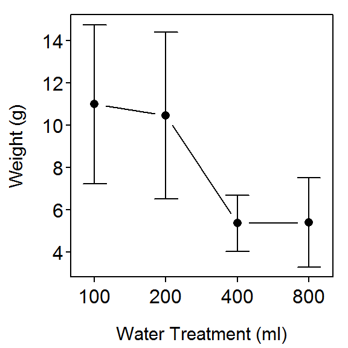
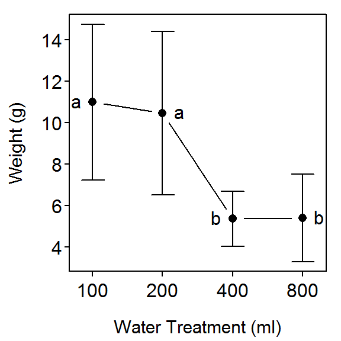
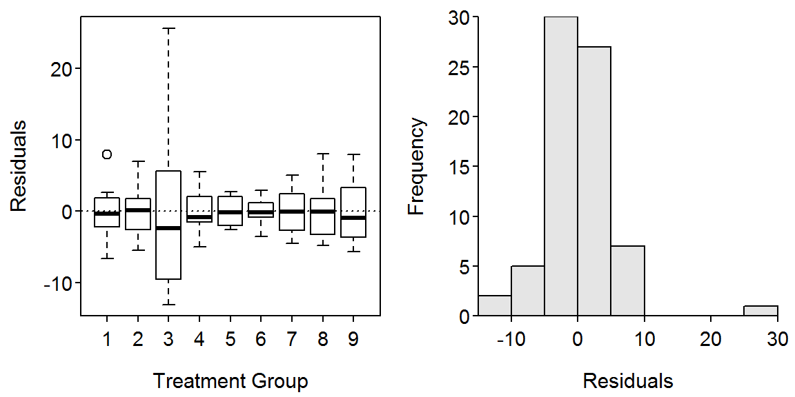
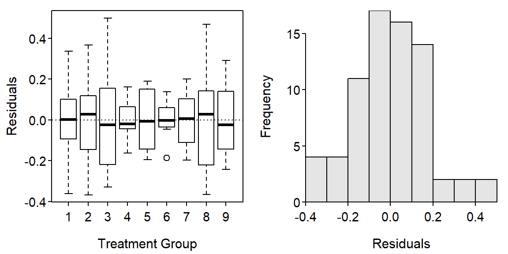
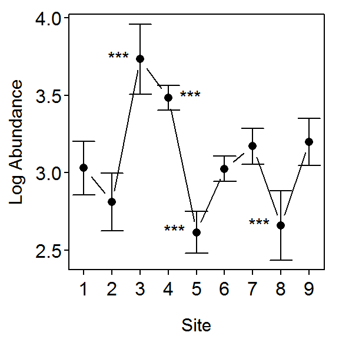

> # Load Packages
> library(NCStats)
> library(multcomp) # glht()A researcher is interested in the effect of irrigation on fruit production by raspberry plants. The researcher has determined that he will examine the effects of 100 ml (a maintenance amount), 200, 400, and 800 ml of water per pot. The researcher had 16 identical planting pots available and much more than that number of raspberry plant seedlings. A square table for growing the plants in a greenhouse was also available. He had enough time to let the plants mature to the point of producing fruit (i.e. berries) or not. At the end of this period, the total weight (g) of mature berries was recorded.
> setwd("C:/aaaWork/Web/GitHub/NCMTH207/modules/Anova-1Way")
> rasp <- read.csv("Raspberry.csv")
> str(rasp)'data.frame': 16 obs. of 2 variables:
$ water : int 100 100 100 100 200 200 200 200 400 400 ...
$ weight: num 8.1 10.9 11.1 13.9 12.2 11.5 11.4 6.8 6.5 5.5 ...> rasp$water <- factor(rasp$water)
> str(rasp)'data.frame': 16 obs. of 2 variables:
$ water : Factor w/ 4 levels "100","200","400",..: 1 1 1 1 2 2 2 2 3 3 ...
$ weight: num 8.1 10.9 11.1 13.9 12.2 11.5 11.4 6.8 6.5 5.5 ...> lm1 <- lm(weight~water,data=rasp)
> anova(lm1)Analysis of Variance Table
Response: weight
Df Sum Sq Mean Sq F value Pr(>F)
water 3 115.042 38.347 10.793 0.001004
Residuals 12 42.635 3.553 > summary(lm1)Coefficients:
Estimate Std. Error t value Pr(>|t|)
(Intercept) 11.0000 0.9425 11.672 6.58e-08
water200 -0.5250 1.3328 -0.394 0.70057
water400 -5.6250 1.3328 -4.220 0.00119
water800 -5.6000 1.3328 -4.202 0.00123
Residual standard error: 1.885 on 12 degrees of freedom
Multiple R-squared: 0.7296, Adjusted R-squared: 0.662
F-statistic: 10.79 on 3 and 12 DF, p-value: 0.001004 > fitPlot(lm1,xlab="Water Treatment (ml)",ylab="Weight (g)",main="")
> levenesTest(lm1)Levene's Test for Homogeneity of Variance (center = median)
Df F value Pr(>F)
group 3 0.3256 0.8069
12 > residPlot(lm1)
> adTest(lm1$residuals)Anderson-Darling normality test with x
A = 0.4308, p-value = 0.2688> outlierTest(lm1)
No Studentized residuals with Bonferonni p < 0.05
Largest |rstudent|:
rstudent unadjusted p-value Bonferonni p
8 -2.836044 0.016196 0.25914> rasp.mc <- glht(lm1, mcp(water = "Tukey"))
> summary(rasp.mc)
Simultaneous Tests for General Linear Hypotheses
Multiple Comparisons of Means: Tukey Contrasts
Fit: lm(formula = weight ~ water, data = rasp)
Linear Hypotheses:
Estimate Std. Error t value Pr(>|t|)
200 - 100 == 0 -0.525 1.333 -0.394 0.97833
400 - 100 == 0 -5.625 1.333 -4.220 0.00540
800 - 100 == 0 -5.600 1.333 -4.202 0.00591
400 - 200 == 0 -5.100 1.333 -3.826 0.01138
800 - 200 == 0 -5.075 1.333 -3.808 0.01175
800 - 400 == 0 0.025 1.333 0.019 1.00000
(Adjusted p values reported -- single-step method)> confint(rasp.mc)
Simultaneous Confidence Intervals
Multiple Comparisons of Means: Tukey Contrasts
Fit: lm(formula = weight ~ water, data = rasp)
Quantile = 2.9659
95% family-wise confidence level
Linear Hypotheses:
Estimate lwr upr
200 - 100 == 0 -0.5250 -4.4780 3.4280
400 - 100 == 0 -5.6250 -9.5780 -1.6720
800 - 100 == 0 -5.6000 -9.5530 -1.6470
400 - 200 == 0 -5.1000 -9.0530 -1.1470
800 - 200 == 0 -5.0750 -9.0280 -1.1220
800 - 400 == 0 0.0250 -3.9280 3.9780> fitPlot(lm1,xlab="Water Treatment (ml)",ylab="Weight (g)",main="")
> addSigLetters(lm1,lets=c("a","a","b","b"),pos=c(2,4,2,4))Australian researchers were interested in the effect of effluent releases on benthic organisms in the release area. To examine the effect, the researchers recorded the total abundance of benthic organisms at 8 haphazardly-selected sublocations at each of 8 control locations (thought to have not been impacted by the effluent release) and 1 potentially impacted location. The results are recorded in BenthicInfaunal.csv. Use these data to determine if the mean abundance of benthic organisms differs between the locations (and, especially, if the impacted location differs from any of the control locations).
> ben <- read.csv("BenthicInfaunal.csv")
> ben$site <- factor(ben$site)
> str(ben)'data.frame': 72 obs. of 2 variables:
$ site : Factor w/ 9 levels "1","2","3","4",..: 1 1 1 1 1 1 1 1 2 2 ...
$ abundance: num 14.4 20.4 21.2 17.6 29 ...> lm2 <- lm(abundance~site,data=ben)
> levenesTest(lm2)Levene's Test for Homogeneity of Variance (center = median)
Df F value Pr(>F)
group 8 3.2452 0.003726
63 > residPlot(lm2)
> adTest(lm2$residuals)Anderson-Darling normality test with x
A = 1.6389, p-value = 0.0002996> outlierTest(lm2) rstudent unadjusted p-value Bonferonni p
20 6.624666 9.5554e-09 6.8799e-07> ## transChooser(lm2) # interactive, result not shown
> ben$logab <- log(ben$abundance)
> lm3 <- lm(logab~site,data=ben)
> levenesTest(lm3)Levene's Test for Homogeneity of Variance (center = median)
Df F value Pr(>F)
group 8 1.5339 0.1636
63 > residPlot(lm3)
> adTest(lm3$residuals)Anderson-Darling normality test with x
A = 0.3323, p-value = 0.5062> outlierTest(lm3)
No Studentized residuals with Bonferonni p < 0.05
Largest |rstudent|:
rstudent unadjusted p-value Bonferonni p
20 2.928889 0.004754 0.34229> anova(lm3)Analysis of Variance Table
Response: logab
Df Sum Sq Mean Sq F value Pr(>F)
site 8 8.6683 1.08353 29.066 < 2.2e-16
Residuals 63 2.3485 0.03728 > ben.mc <- glht(lm3, mcp(site = "Dunnett"))
> summary(ben.mc)
Simultaneous Tests for General Linear Hypotheses
Multiple Comparisons of Means: Dunnett Contrasts
Fit: lm(formula = logab ~ site, data = ben)
Linear Hypotheses:
Estimate Std. Error t value Pr(>|t|)
2 - 1 == 0 -0.218435 0.096537 -2.263 0.14538
3 - 1 == 0 0.703189 0.096537 7.284 < 0.001
4 - 1 == 0 0.453836 0.096537 4.701 < 0.001
5 - 1 == 0 -0.414859 0.096537 -4.297 < 0.001
6 - 1 == 0 -0.004238 0.096537 -0.044 1.00000
7 - 1 == 0 0.140280 0.096537 1.453 0.57979
8 - 1 == 0 -0.371867 0.096537 -3.852 0.00204
9 - 1 == 0 0.168668 0.096537 1.747 0.37980
(Adjusted p values reported -- single-step method)> fitPlot(lm3,ylab="Log Abundance",xlab="Site",main="")
> addSigLetters(lm3,lets=c("","","***","***","***","","","***",""),pos=c(2,4,2,4,2,2,4,2,4))
> confint(ben.mc)
Simultaneous Confidence Intervals
Multiple Comparisons of Means: Dunnett Contrasts
Fit: lm(formula = logab ~ site, data = ben)
Quantile = 2.7279
95% family-wise confidence level
Linear Hypotheses:
Estimate lwr upr
2 - 1 == 0 -0.218435 -0.481779 0.044910
3 - 1 == 0 0.703189 0.439845 0.966533
4 - 1 == 0 0.453836 0.190492 0.717180
5 - 1 == 0 -0.414859 -0.678203 -0.151515
6 - 1 == 0 -0.004238 -0.267582 0.259106
7 - 1 == 0 0.140280 -0.123064 0.403625
8 - 1 == 0 -0.371867 -0.635211 -0.108523
9 - 1 == 0 0.168668 -0.094676 0.432012> exp(confint(ben.mc)$confint) Estimate lwr upr
2 - 1 0.8037761 0.6175536 1.0461538
3 - 1 2.0201841 1.5521385 2.6293682
4 - 1 1.5743404 1.2095900 2.0490809
5 - 1 0.6604332 0.5074210 0.8595860
6 - 1 0.9957713 0.7650664 1.2960450
7 - 1 1.1505965 0.8840210 1.4975575
8 - 1 0.6894457 0.5297118 0.8973472
9 - 1 1.1837272 0.9094758 1.5406787
attr(,"conf.level")
[1] 0.95
attr(,"calpha")
[1] 2.730086